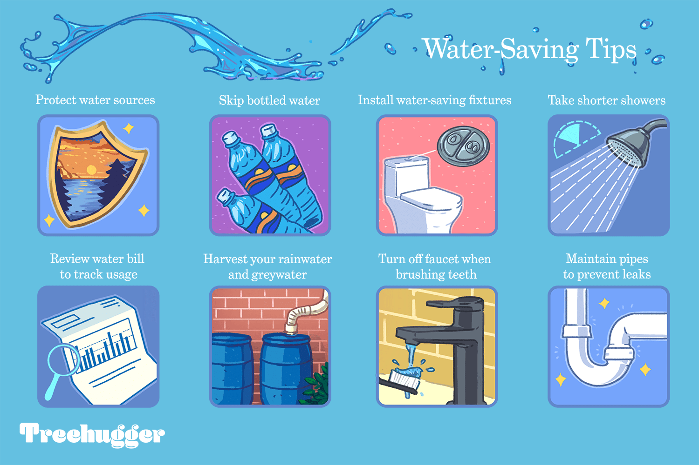

👉 Safe Water: You Can Drink It.🤗
model's Accuracy rate - {{ message*100 }} 📈
📎 Join the Blue Revolution to stop water pollution ,,
💡 Pollution Prevention Tips for Water Conservation
📌 In the Bathroom
- Install a toilet dam or plastic bottle in your toilet tank.
- Install a water-efficient showerhead (2.5 gallons or less per minute).
- Take short showers and draw less water for baths.
- When you buy a new toilet, purchase a low flow model (1.6 gallons or less per flush).
- Check your toilet for "silent" leaks by placing a little food coloring in the tank and seeing if it leaks into the bowl.
- urn off water while brushing teeth and shaving.
📌 In the Kitchen or Laundry
- Compost your food scraps rather than using a garbage disposal in your sink.
- Keep a gallon of drinking water in the refrigerator rather than running the tap for cold water.
- Run your washing machine with a full load of clothes. Wash with warm water instead of hot, rinse with cold water instead of warm. Wash with cold water when you can. (When possible) hang your wash out to dry.
📌 Outdoors
- Install a drip-irrigation water system for valuable plants.
- Use drought-tolerant plants and grasses for landscaping and reduce grass-covered areas.
- Cut your grass at least three inches high to shade the roots, making it more drought tolerant; keep your mower sharp for the healthiest grass.
- Try to water only in the evening or very early morning to minimize evaporation.
- If you use porous pavement (gravel is a good example) instead of asphalt for driveways and walkways, the rain can recharge groundwater supplies instead of running off and contributing to erosion.
- Use a broom instead of a hose to clean off your driveway or sidewalk.
- Wash your car less often or wash it at a car wash where they clean and recycle the water. If you do wash your car at home, use a bucket of soapy water rather than running the hose. Keep a spring-loaded nozzle on the hose.
